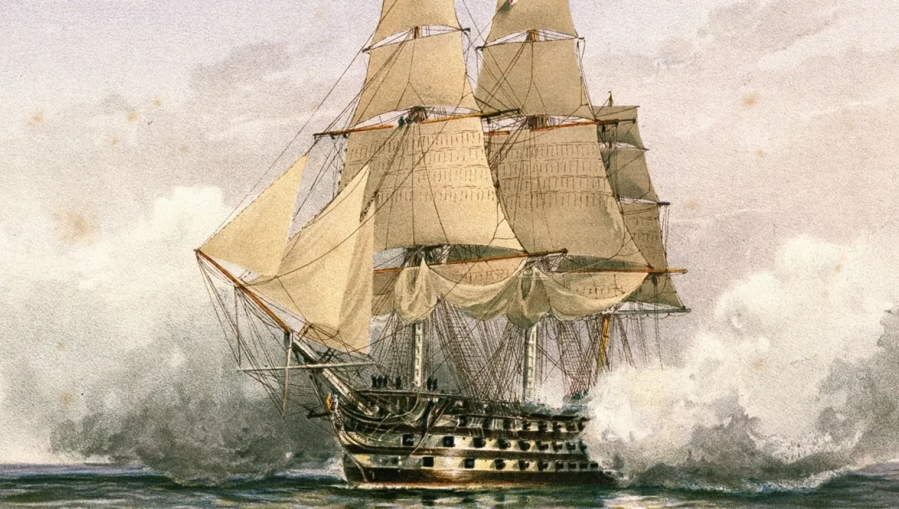
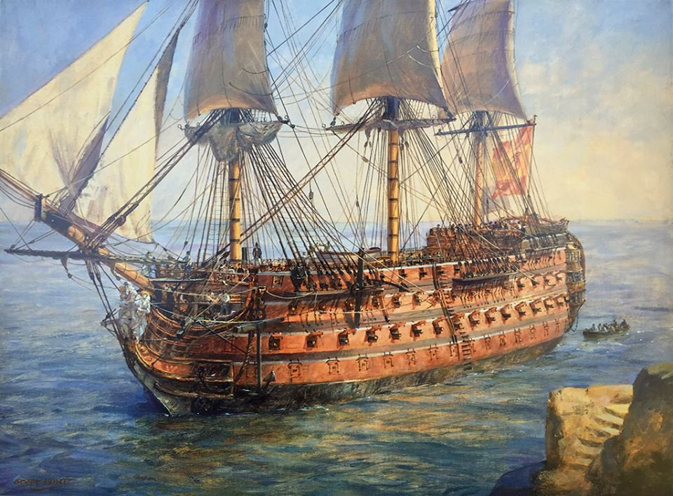
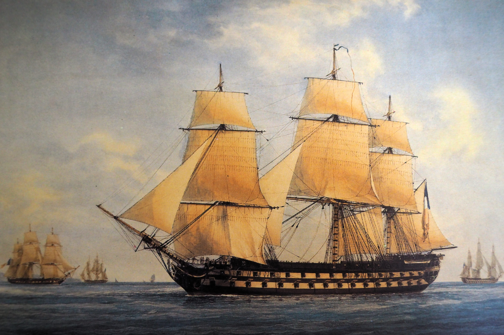

Grandes Navios da Era da Vela
O poderio naval no período das Guerras Napoleônicas era categorizado pelo sistema de "classes" (rates),
baseado no número de canhões funcionais a bordo. Abaixo, detalhamos três das embarcações mais icônicas que
definiram o destino de nações inteiras.
1. HMS Victory (Grã-Bretanha, 1765)
O HMS Victory é o navio de linha de primeira classe mais famoso da Royal Navy. Ele serviu como
a nau-capitânia do Almirante Nelson durante a célebre Batalha de Trafalgar em 1805. Sua estrutura robusta
sobreviveu a intensos bombardeios franceses e espanhóis.

Características Principais:
- Classificação: Navio de Linha de 1ª Classe (104 canhões).
- Material: Construído majoritariamente em carvalho báltico e olmo.
- Destino: Preservado até hoje em Portsmouth como museu militar.
2. Santísima Trinidad (Espanha, 1769)
Apelidado de "El Escorial dos Mares", o Santísima Trinidad foi o maior navio de guerra de sua
época. Originalmente construído com 112 canhões, foi reformado para carregar incríveis 140 peças de artilharia espalhadas
por quatro conveses contínuos.

Fatos Históricos:
- Batalha Famosa: Enfrentou sozinho várias naus britânicas em Trafalgar.
- Construção: Feito em Havana, Cuba, utilizando madeiras tropicais preciosas como o mogno.
- Destino: Afundou um dia após a Batalha de Trafalgar devido aos severos danos sofridos.
3. Bucentaure (França, 1803)
O Bucentaure foi um moderno navio de linha de 80 canhões da classe Tonnant. Ele serviu como a
nau-capitânia do Almirante francês Pierre-Charles Villeneuve durante a campanha de 1805, sendo o centro tático da
frota combinada franco-espanhola.

Registros Militares:
- Poder de Fogo: Focado em alta mobilidade e disparos rápidos de carronadas de grosso calibre.
- Batalhas: Liderou a linha francesa na Batalha do Cabo Finisterre e em Trafalgar.
- Destino: Capturado por tripulações britânicas, naufragou em uma tempestade logo em seguida.
Aprofunde seus Estudos
A história naval deste período é vasta e cheia de nuances estratégicas. Para consultar dados bibliográficos completos
sobre as táticas e frotas, visite a cobertura detalhada das
Guerras Napoleônicas na Wikipédia.